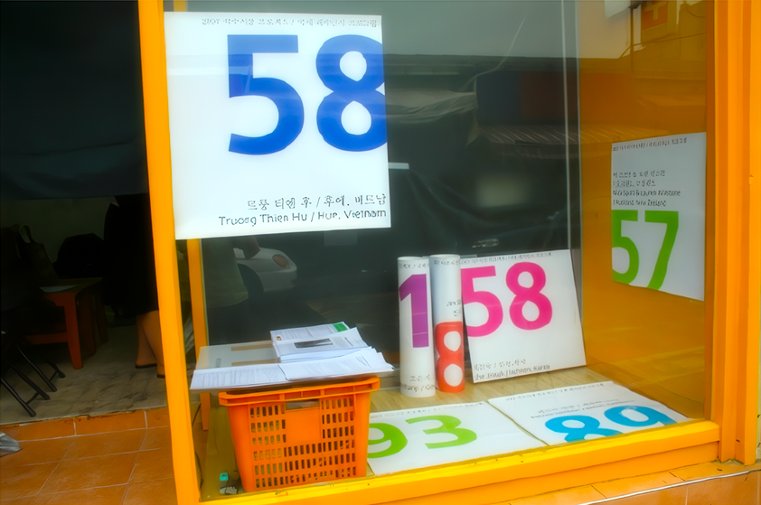
2007 석수시장프로젝트 1차 아티스트 프리젠테이션
2007년 6월 21일 목요일 오후 2시 - 6시
스톤앤워터 세미나실
2;00-2:10 소개/인사말 introduction / 박찬응 Park Chan-Eung
2:10-2:30 채진숙 Che Jinsuk 발표 (10분) / 통역 (10분)
2:30-2:50 질의/응답 (10분) / 통역 (10분)
2:50-3:10 패트릭 잠봉 Patrik Jambon 발표 (10분) / 통역 (10분)
3:10-3:30 질의/응답 (10분) / 통역 (10분)
3:30-3:50 이재헌 Lee Jaeheon 발표 (10분) / 통역 (10분)
3:50-4:10 질의/응답 (10분) / 통역 (10분)
4:10-4:20 휴식
4:20-4:40 타마라 구베르낫 Tamara Gubernat 발표 (10분) / 통역 (10분)
4:40-5:00 질의/응답 (10분) / 통역 (10분)
5:00-5:20 조은지 Cho Eunji 발표 (10분) / 통역 (10분)
5:20-5:40 질의/응답 (10분) / 통역 (10분)
5:40-5:50 맺는말
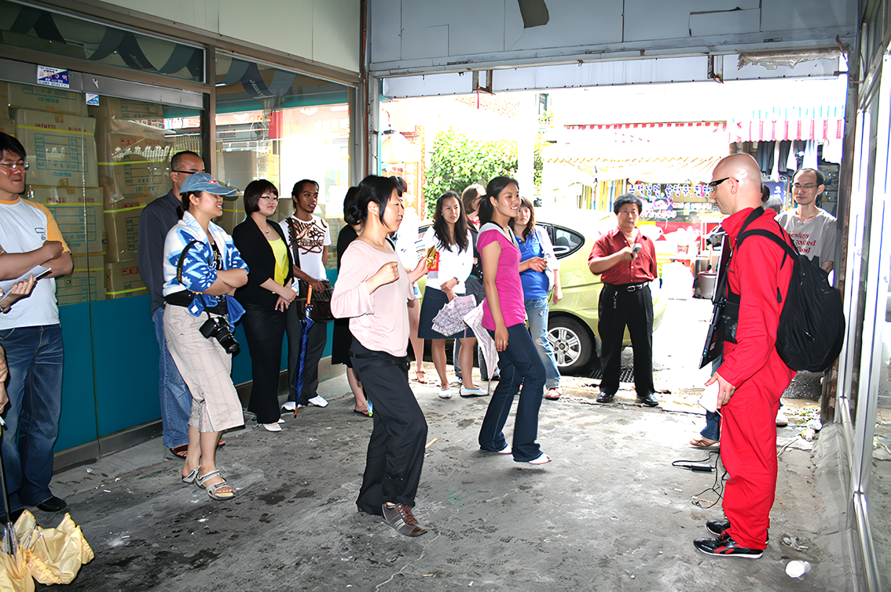
2007 석수시장프로젝트 2차 아티스트 프리젠테이션
2007년 6월 22일 금요일 오후 2시 - 6시
스톤앤워터 세미나실
2:00-2:10 소개/인사말 introduction / 박찬응 Park Chan-Eung
2:10-2:30 진시우 Jin Shiu 발표 (10분) / 통역 (10분)
2:30-2:50 질의/응답 (10분) /통역 (10분)
2:50-3:10 김선애 Kim Sunae 발표 (10분) / 통역 (10분)
3:10-3:30 질의/응답 (10분) / 통역 (10분)
3:30-3:50 니콜라스 스프랏 & 로렌 윈스톤 Nicholas Spratt & Lauren Winstone 발표 (10분) / 통역 (10분)
3:50-4:10 질의/응답 (10분) / 통역 (10분)
4:10-4:20 휴식
4:20-4:40 권승찬 <바세린 프로젝트> Gwon Seungchan <Vaseline project> 발표 (10분) / 통역 (10분)
4:40-5:00 질의/응답 (10분) / 통역 (10분)
5:00-5:40 스톤앤워터 공간에 대한 소개 + 2007년 사업소개 (20분) / 통역 (20분)
5:40-6:00 질의/응답 (10분) / 통역 (10분)
6:00-6:10 맺는말
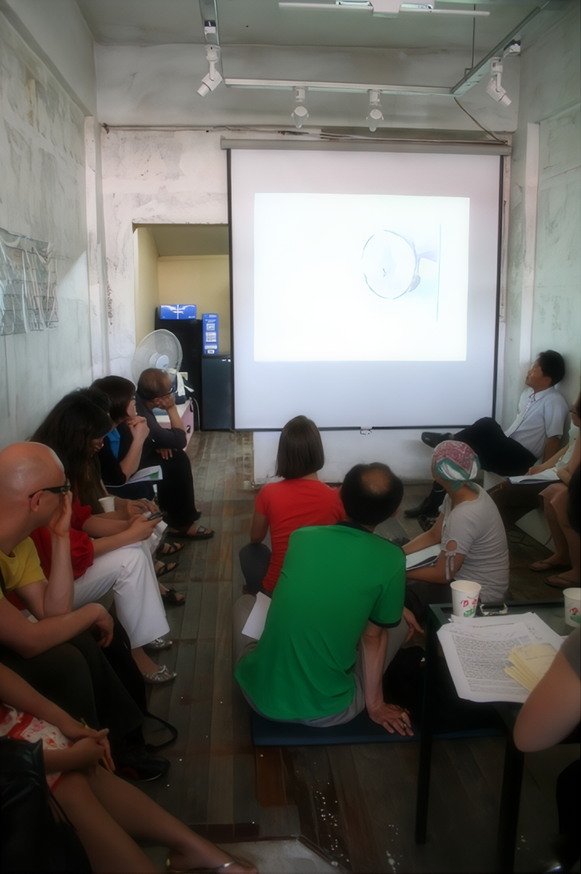 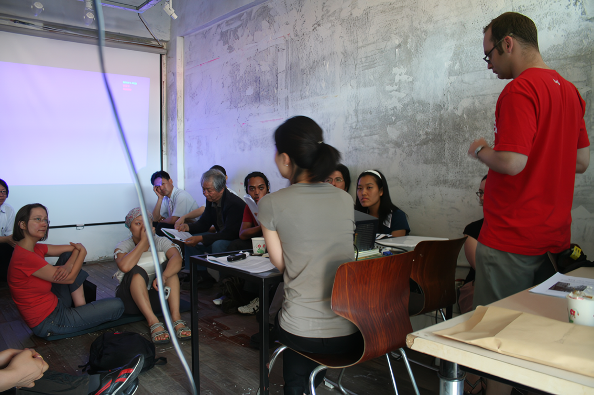 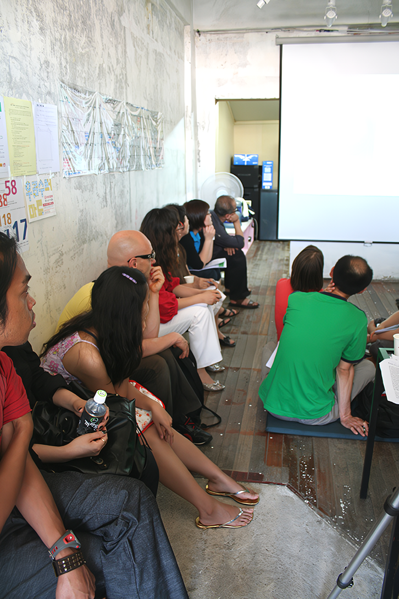 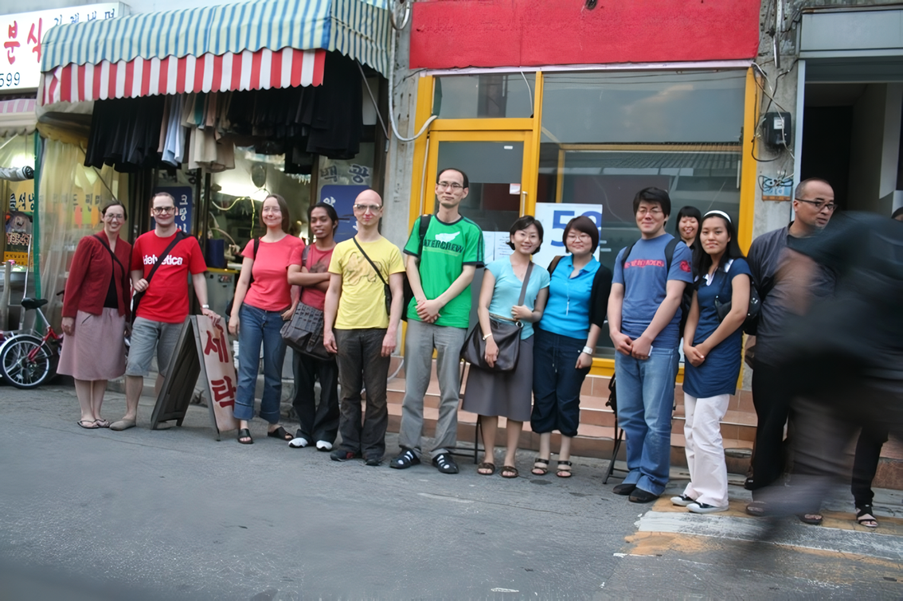 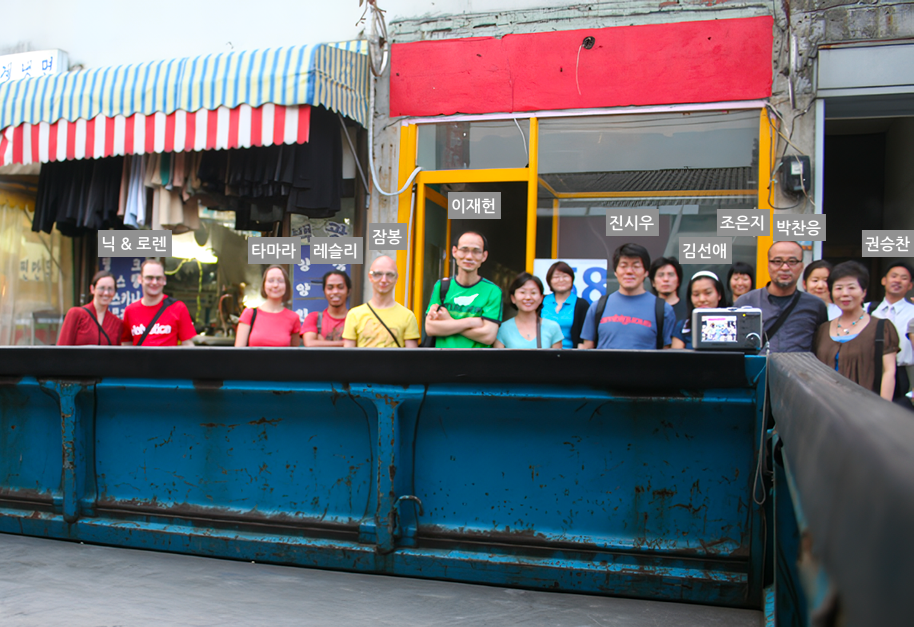
2007 석수시장프로젝트 아티스트 워크샵 #1 - 미시 공동체의 자생성
Artist Workshop Session #1 - The Autonomy of small communities
2007년 6월 29일 금요일 오후 2시 - 5시
스톤앤워터 세미나실
2:00-2:10
소개말/권자연 introduction/Jayeon Kwon
2:00-2:30
공동체성을 회복하기 위한 레지던시:창문아트센터 (경기도 화성) / 박석윤 관장님
residency/restoring community : Changmoon art center(Gyeonggido, Hwasung)/Park Suk-Yoon director
2:30_3:00 통역 이은진/interpretation Lee Eun-jin
3:00-3:30 다문화공동체의 새로운 가능성:국경없는 마을 (경기도 안산시)/류성환 목사님
new possibility in multi-cultural community : Borderless Village (Gyeonggido, Ansan)/ Ryu Sung-Hwan pastor
3:30-4:00 통역 이은진/interpretation Lee Eun-jin
4:00-4:30 질의/응답/questions/opinions
2007 석수시장프로젝트 아티스트 워크샵 #2 - 지역 공공미술 프로젝트 사례 발표
Artist Workshop Session #2 - Cases of Community-based Public Art Project
2007년 7월 6일 금요일 오후 2시
안양공공예술프로젝트(APAP)와 안양천프로젝트 답사/워크샵/참여작가들의 제안서
당일 일정:
2:00-2:30 안양지역 공공미술과 일정 발표 – 박찬응 관장님(스톤앤워터 세미나실)
2:30-6:00 현장 답사
현장답사 코스 :
1. 스톤앤워터 -> 안양사 (문화재길걷기)
2. 안양사 -> APAP답사
3. 서울대 수목원 -> 불성사
4. 하산길 ->평촌신도시
총 소요시간 3-4 시간 예정
준비물: 운동화, 작은 배낭, 모자, 물, 간단한 과일 등
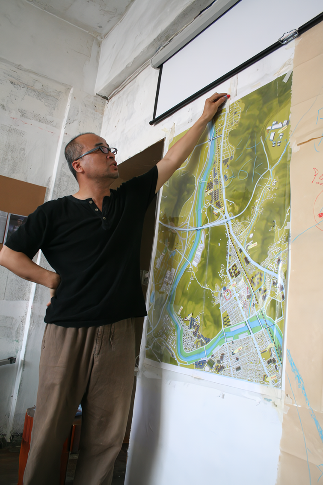 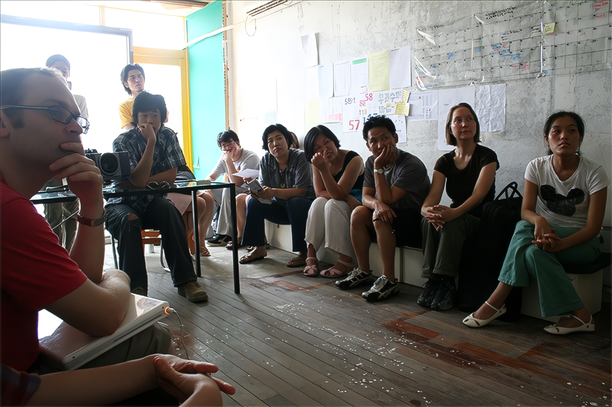 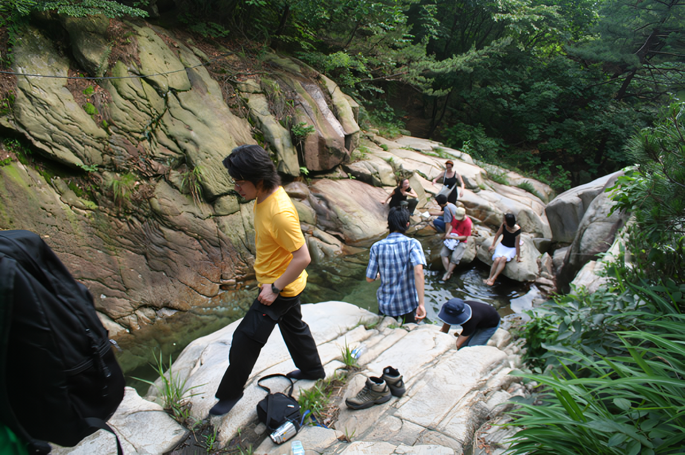 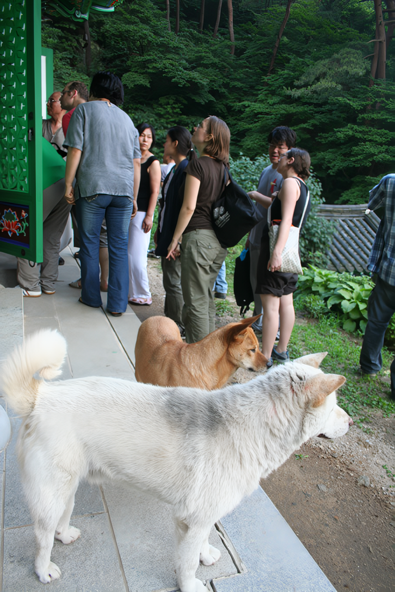 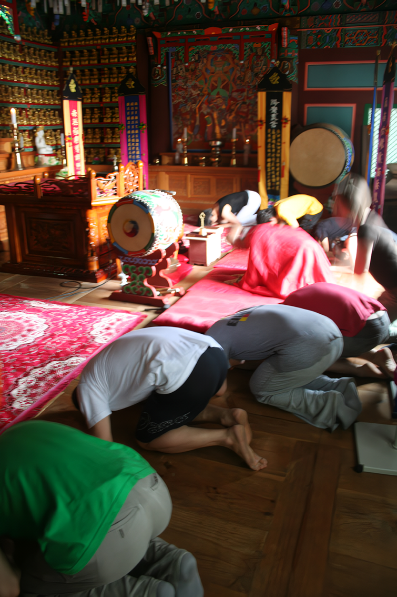 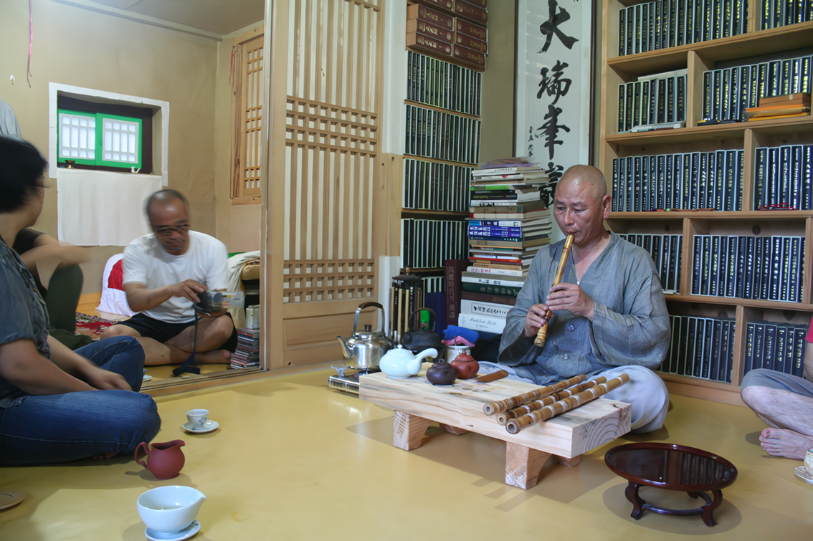 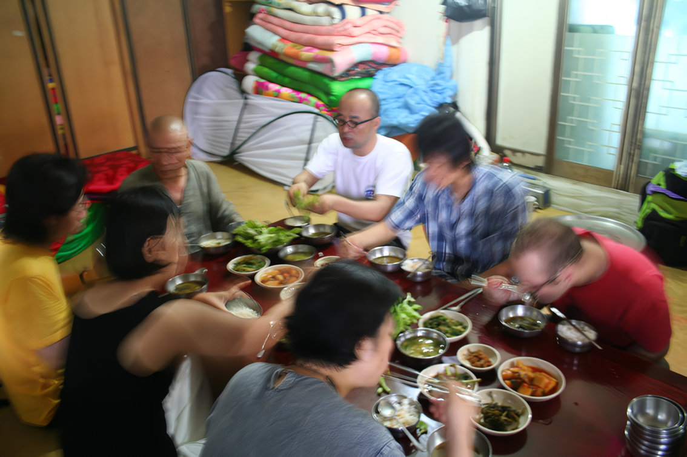 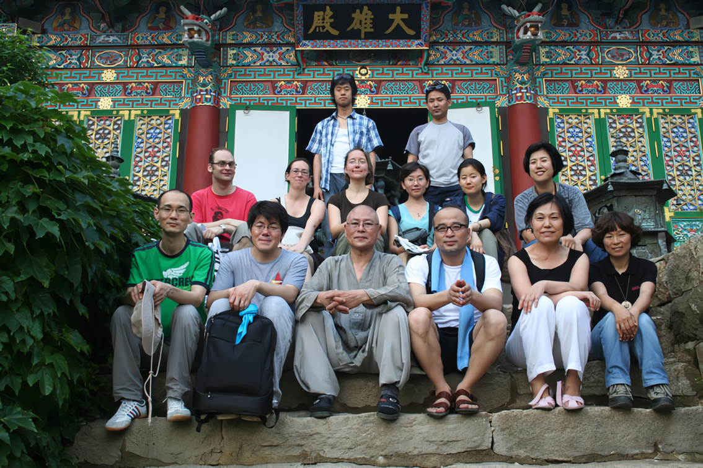
2007 석수시장프로젝트 아티스트 워크샵 #3 - 새로운 지역미술 - 예술의 확장성을 위하여
Artist Workshop Session #3 - New Local Arts: For the Expansion of Artistic Horizon
2007년 7월 13일 금요일 오후 2시 - 5시
스톤앤워터 세미나실
2:00-2:10 인사말 / 권자연
2:10-2:40 철암 그리기와 비자 프로젝트 : 할 아텔 Hal Artec / 서용선
2:40-3:10 통역 / 이은진
3:10-3:20 휴식
3:10-3:50 문화소통을 통한 마을 만들기 : 토리데 아트 프로젝트(Toride Art Project) / 강우영
3:50-4:20 통역 / 이은진
4:20-5:00 토론 / 질문/ 마무리
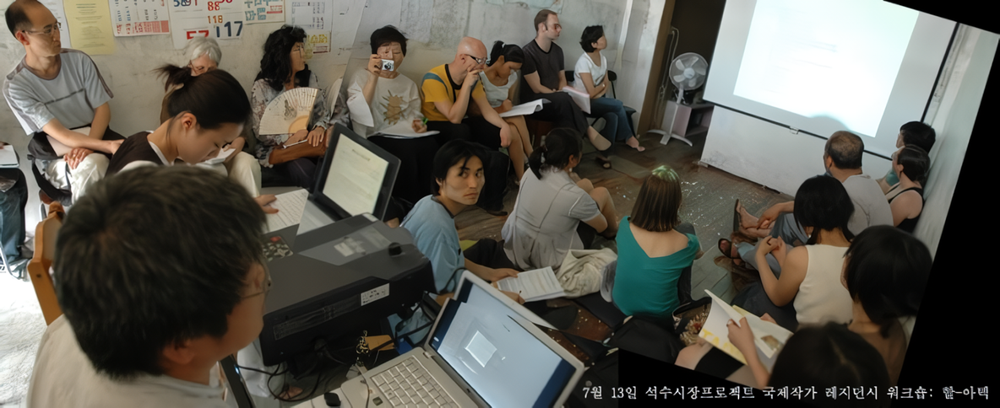 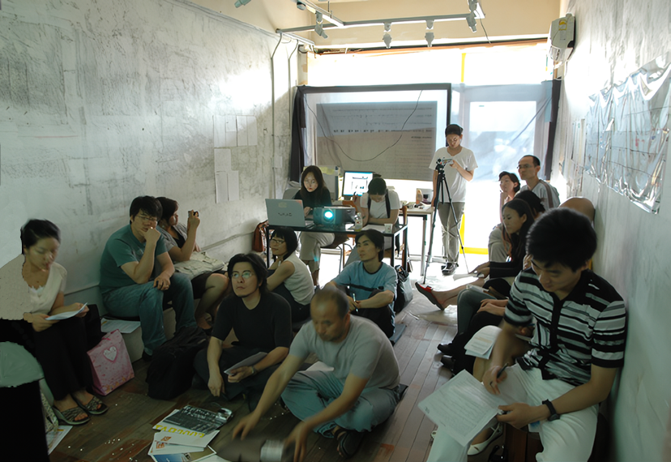
할 아텍(Hal art & Technology) - www.halartec.com
토리데 아트 프로젝트(Toride Art Project) - https://toride-ap.gr.jp/korean